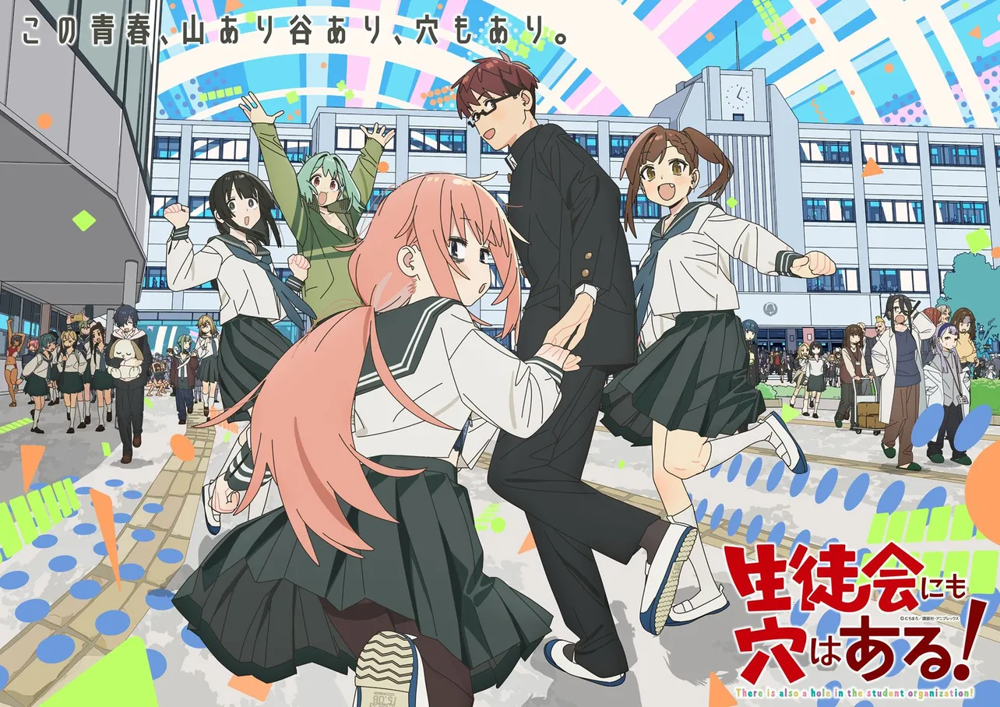

Anime學生會也有洞！
生徒会にも穴はある！ ／ There's a Hole in the Student Council Too!
台巴哈動畫瘋秋番近七日增量榜首級；日首週人氣投票首位（NQ Brief／Anime Corner）；anime-observer 綜合前列。
想週末開一包又甜又刺嘅校園零食，呢套而家係台日討論盤最搶鏡嗰包。文青男主為內申點硬闖生徒會，結果撞上悶騷會長、外表清冷實則溫柔嘅會計、嘴賤得嚟好可愛嘅男孩子，同埋細細隻「棄貓」庶務——互相挖角、互揭短處，笑完又有啲心動。
畫面偏可愛到犯規，節奏係短篇連擊，好啱一邊刷手機一邊睇。呢個星期聲量繼續高企，係因為台灣動畫瘋秋番觀看增量長期壓場，日本側首週人氣投票亦曾經以明顯差距居冠，再夾住原作話題性同分級／無修正討論，SNS 串自然愈滾愈大；唔使靠單一爆點，而係跨平台都見到有人傾。